2026
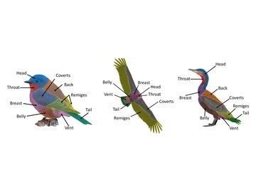
PlumageParts: a fine-grained avian plumage segmentation dataset and benchmark for ecological image analysisunder review
bioRxiv · under consideration at Scientific Data
Postdoctoral Scholar · AI for biological imaging
Biodiversity and Biocomplexity Unit, Okinawa Institute of Science and Technology, Japan
I build AI methods and open-source tools that turn images of biological specimens into measurements, and I test when those measurements are reliable enough to use.
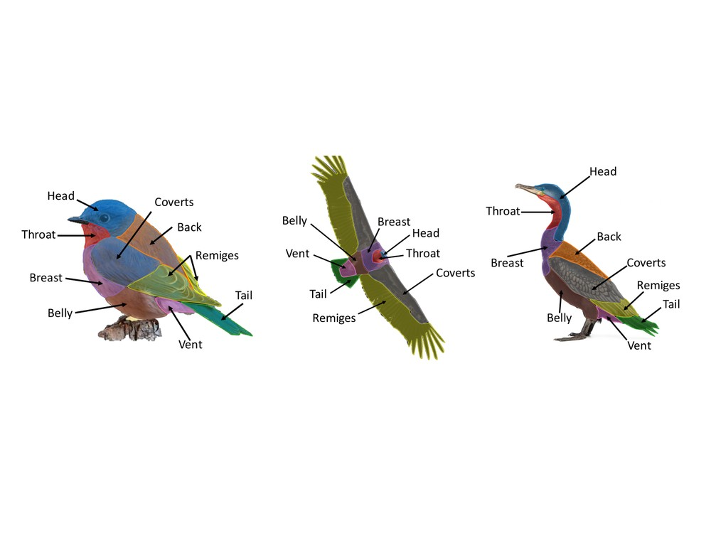
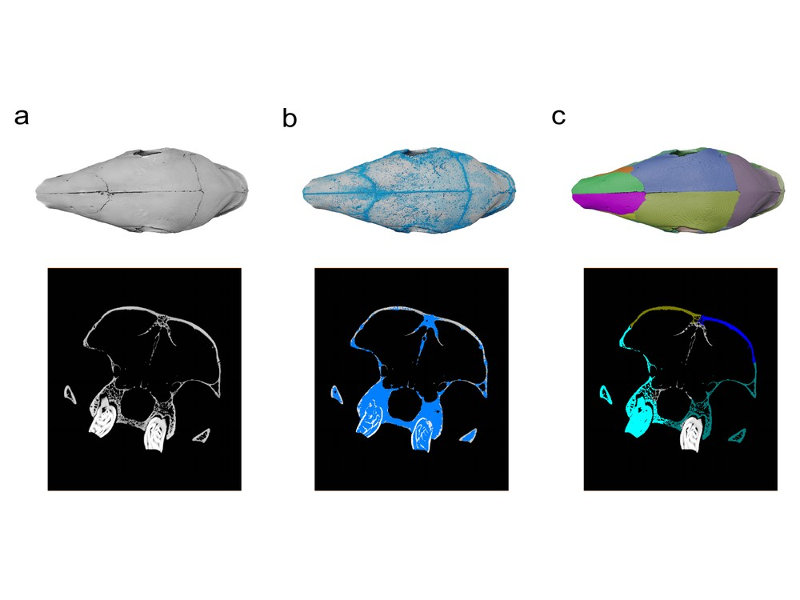
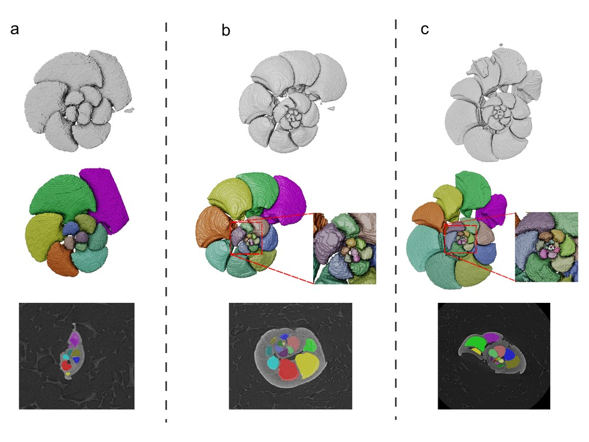
I trained in software engineering and computer science and worked as a software developer before my PhD with Gavin Thomas and Steve Maddock at the University of Sheffield. I then worked with Anjali Goswami at the Natural History Museum, London, and joined Evan Economo's lab at OIST in 2025.
During my PhD I segmented 146,652 museum photographs of birds to study how UV reflectance evolved across 4,545 passerine species (Nature Communications, 2022). At the Natural History Museum I built SPROUT, a training-free toolkit that segments micro-CT scans into anatomical parts (accepted at Nature Communications). I also built PlumageParts, a dataset and benchmark of 4,705 bird images labelled into nine plumage regions.
At OIST I am building a multi-part segmentation benchmark from Antscan's 2,193 ant micro-CT scans, funded by a JSPS KAKENHI grant on which I am PI. The question I care about is whether an automated measurement can be trusted for a given trait, not only whether a model is accurate on average.
Full list on ORCID. * corresponding author · † joint first author.

PlumageParts: a fine-grained avian plumage segmentation dataset and benchmark for ecological image analysisunder review
bioRxiv · under consideration at Scientific Data
The avian colourscape is disproportionately threatened by species extinctionsunder review
bioRxiv · under review at Nature Ecology & Evolution
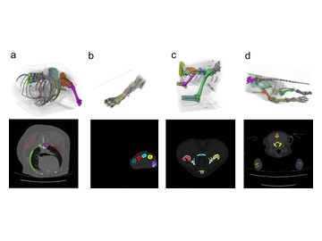
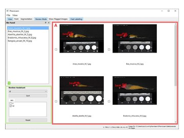
Landmark-free morphometrics reveals sexual dimorphism in shape and integration of tagmata in the forensically important blowfly Calliphora vicina
Zoological Journal of the Linnean Society 205(2), zlaf104
Opportunities and challenges in applying AI to evolutionary morphology
Integrative Organismal Biology 6(1), obae036
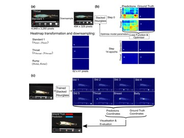
Using pose estimation to identify regions and points on natural history specimens
PLOS Computational Biology 19(2), e1010933
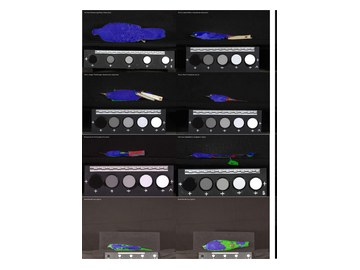
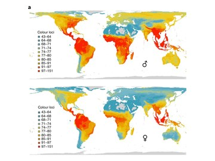
SpheroidAnalyseR: an online platform for analysing data from 3D spheroids or organoids grown in 96-well plates
Journal of Biological Methods 9(4), e163
Every project I run is meant to leave behind a tool or a dataset that stands on its own.
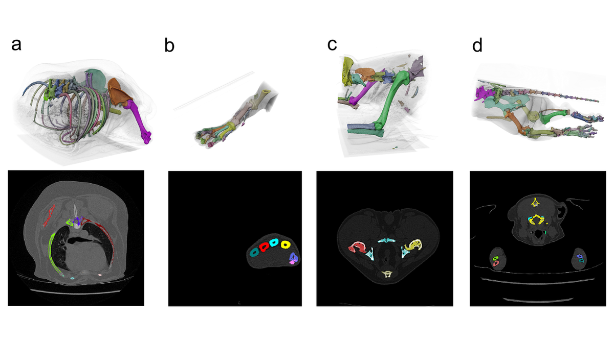
Training-free, interpretable framework for fine-grained multi-class segmentation of 2D and 3D grayscale images. Substitutes explicit priors on intensity, connectivity and morphology for training data, so a new dataset does not need a fresh round of manual annotation.
Used at collection scale: 1,000+ foraminifera, 100+ canine CT scans, 100+ mammalian skulls. napari plugin and command-line workflows, with Avizo and ImageJ interfaces.
Paper accepted at Nature Communications (2026).
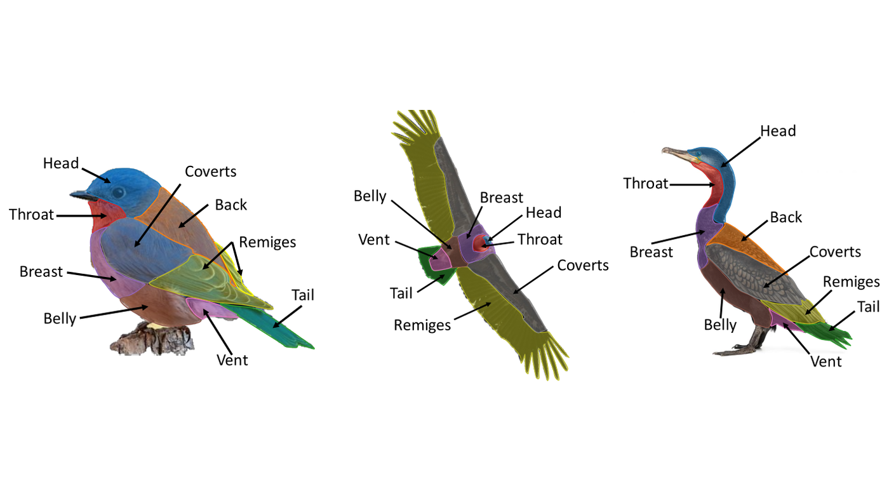
Fine-grained avian plumage segmentation dataset: 4,705 images, nine anatomical classes, 39 orders, 222 families — plus training and inference code, model weights and a detect–track–segment video pipeline.
Best model reaches 84% mean IoU with a frozen DINOv3 encoder and carries over without retraining to independent bird benchmarks (PartImageNet bird subset, CUB-200-2011).
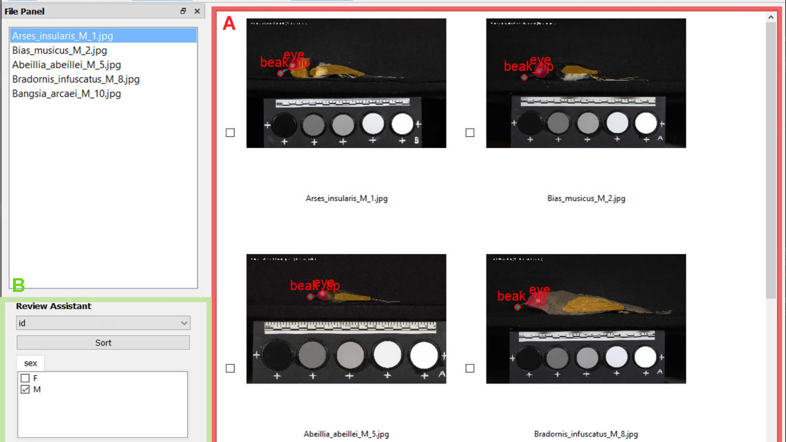
GUI toolkit that lets biologists without a computing background run the whole annotate–train–predict loop themselves: image annotation, deep-learning model training and phenotypic data extraction in one interface.
Published in Journal of Evolutionary Biology (2025) and used in projects beyond the group that built it.

Cross-species, multi-part segmentation benchmark built on Antscan, the published archive of 2,193 synchrotron micro-CT scans across 792 ant species, whose released segmentations separate only specimen from background.
Funded by a JSPS KAKENHI Research Activity Start-up grant (26K25578), with me as PI, 2026–2028.
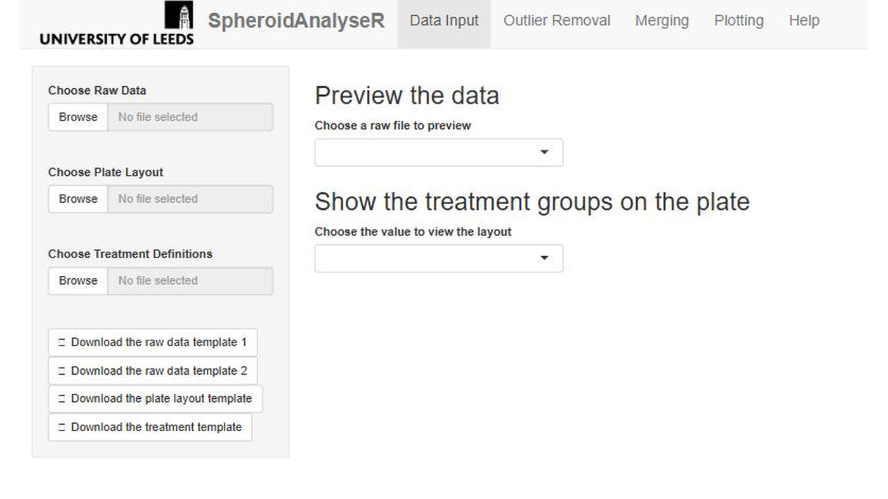
R Shiny platform for high-throughput analysis of imaging data from 3D spheroids and organoids grown in 96-well plates.